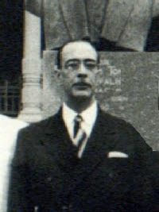

João de Deus Cardoso de Mello
"João de Deus Cardoso de Mello nasceu no dia 8 de março de 1898, em São Paulo, e recebeu esse nome em homenagem ao santo do dia, São João de Deus. Muito jovem, dedicou-se aos estudos no Colégio dos Jesuítas de Friburgo (RJ), sempre se destacando entre os melhores alunos. Veio para São Paulo em 1909, residindo na casa de seu avô materno, barão de Brasílio Machado.
Prosseguiu seus estudos na Faculdade de Direito, do Largo São Francisco. Diplomou-se em 18 de fevereiro de 1919 e doutorou-se em 4 de agosto de 1939, em Ciências Jurídicas e Sociais.
Por volta de 1922, ingressou na Magistratura, iniciou a carreira como delegado de polícia e, mais tarde, como promotor público na pequena cidade de Pirajuí. Em 2 de maio de 1925, casou-se com Maria Adelaide de Guedes Tavares, na igreja de Santa Cecília, em São Paulo. Dessa união, nasceram três filhos: João Manoel, Maria Ismênia e Maria Suzana.
Em 1932, quando promotor público de Ribeirão Preto (SP), organizou o sistema de defesa da cidade.
Como membro do Ministério Público, colaborou na elaboração de novas diretrizes e renovação do Código Civil Penal.
Homem público, íntegro e eficaz, ocupou o cargo de procurador do Estado e fez parte do Conselho Penitenciário.
De setembro de 1948 a dezembro de 1949, Cardoso de Mello ocupou o cargo de secretário da pasta de Educação do Estado de São Paulo. Foi convidado pelo secretário da Justiça do Estado de São Paulo, quando proferiu uma série de conferências e trabalhos sobre vários assuntos relacionados com o bem social e as causas públicas, incluindo entre elas a recuperação do menor e a Municipalização do Ensino Primário.
Neste último trabalho, ressaltou a municipalização do ensino, surgido em 1956. Aposentou-se quando ministro do Tribunal de Contas do Estado, após 27 anos de luta incessante. Passou a exercer a cadeira de Processo Penal como catedrático da Faculdade de Direito da Universidade de São Paulo e do Mackenzie, onde foi vice-reitor e, posteriormente, reitor. Faleceu em 25 de setembro de 1970, em São Paulo."
Fonte:https://sites.google.com/view/emefjoodedeuscardosodemello/biografia-do-patrono?authuser=0